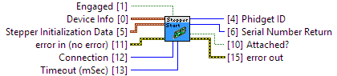

error in can accept error information wired from VIs previously called.
Opens and initializes a Phidget Stepper

|
|
error in (no error) error in can accept error information wired from VIs previously called. |
|
|
status status is TRUE (X) if an error occurred or FALSE (checkmark) to indicate a warning or that no error occurred. Right-click the error in control on the front panel and select Explain Error or Explain Warning from the shortcut menu for more information about the error. |
|
|
code code is the error or warning code. Right-click the error in control on the front panel and select Explain Error or Explain Warning from the shortcut menu for more information about the error. |
|
|
source source describes the origin of the error or warning. Right-click the error in control on the front panel and select Explain Error or Explain Warning from the shortcut menu for more information about the error. |
|
|
Device Info Information required to specify which Phidget to open |
|
|
Serial Number The device serial number |
|
|
Channel The channel index |
|
|
Port The hub port index |
|
|
Stepper Initialization Data A set of the required parameters to initialize a Phisdget Stepper controller. |
|
|
Control Mode The control mode value
1062_0 (ver: 101) Unipolar Stepper Controller: Def: CONTROL_MODE_STEP 1062_1 (ver: 101, 102) Unipolar Stepper Controller: Def: CONTROL_MODE_STEP
1063_0 (ver: 100) Bipolar Stepper Controller: Def: CONTROL_MODE_STEP 1063_1 (ver: 100, 101) Bipolar Stepper Controller: Def: CONTROL_MODE_STEP
1067_0 (ver: 200, 201) Bipolar Stepper Controller: Def: CONTROL_MODE_STEP
STC1000_0 (ver: 100) Bipolar Stepper Controller: Def: CONTROL_MODE_STEP
STC1001_0 (ver: 100) Bipolar Stepper Controller: Def: CONTROL_MODE_STEP
STC1002_0 (ver: 101) Bipolar Stepper Controller: Def: CONTROL_MODE_STEP
STC1003_0 (ver: 100) Bipolar Stepper Controller: Def: CONTROL_MODE_STEP |
|||||||||||||||||||||||||||||||||||||||||||||||||||||
|
|
Rescale Factor The rescale factor value 1062_0 (ver: 101) Unipolar Stepper Controller: Def: 1 1062_1 (ver: 101, 102) Unipolar Stepper Controller: Def: 1
1063_0 (ver: 100) Bipolar Stepper Controller: Def: 1 1063_1 (ver: 100, 101) Bipolar Stepper Controller: Def: 1
1067_0 (ver: 200, 201) Bipolar Stepper Controller: Def: 1
STC1000_0 (ver: 100) Bipolar Stepper Controller: Def: 1
STC1001_0 (ver: 100) Bipolar Stepper Controller: Def: 1
STC1002_0 (ver: 101) Bipolar Stepper Controller: Def: 1
STC1003_0 (ver: 100) Bipolar Stepper Controller: Def: 1 |
|
|
Velocity Limit Velocity limit 1062_0 (ver: 101) Unipolar Stepper Controller: Min: 0 Max: 383.25 Def: 200 1062_1 (ver: 101, 102) Unipolar Stepper Controller: Min: 0 Max: 383.25 Def: 200
1063_0 (ver: 100) Bipolar Stepper Controller: Min: 0 Max: 32768 Def: 10000 1063_1 (ver: 100, 101) Bipolar Stepper Controller: Min: 0 Max: 32768 Def: 10000
1067_0 (ver: 200, 201) Bipolar Stepper Controller: Min: 0 Max: 250000 Def: 10000
STC1000_0 (ver: 100) Bipolar Stepper Controller: Min: 0 Max: 115000 Def: 10000
STC1001_0 (ver: 100) Bipolar Stepper Controller: Min: 0 Max: 115000 Def: 10000
STC1002_0 (ver: 101) Bipolar Stepper Controller: Min: 0 Max: 115000 Def: 10000
STC1003_0 (ver: 100) Bipolar Stepper Controller: Min: 0 Max: 115000 Def: 10000 |
|
|
Acceleration The acceleration value 1062_0 (ver: 101) Unipolar Stepper Controller: Min: 140.625 Max: 8859.375 Def: 200 1062_1 (ver: 101, 102) Unipolar Stepper Controller: Min: 140.625 Max: 8859.375 Def: 200
1063_0 (ver: 100) Bipolar Stepper Controller: Min: 4000 Max: 1020000 Def: 10000 1063_1 (ver: 100, 101) Bipolar Stepper Controller: Min: 4000 Max: 1020000 Def: 10000
1067_0 (ver: 200, 201) Bipolar Stepper Controller: Min: 2 Max: 10000000 Def: 10000
STC1000_0 (ver: 100) Bipolar Stepper Controller: Min: 2 Max: 10000000 Def: 10000
STC1001_0 (ver: 100) Bipolar Stepper Controller: Min: 2 Max: 10000000 Def: 10000
STC1002_0 (ver: 101) Bipolar Stepper Controller: Min: 2 Max: 10000000 Def: 10000
STC1003_0 (ver: 100) Bipolar Stepper Controller: Min: 2 Max: 10000000 Def: 10000 |
|
|
Current Limit The current limit value Units: amperes (A) 1062_0 (ver: 101) Unipolar Stepper Controller: Unsupported
1062_1 (ver: 101, 102) Unipolar Stepper Controller: Unsupported
1063_0 (ver: 100) Bipolar Stepper Controller: Min: 0.0542 Max: 2.492 Def: 1 1063_1 (ver: 100, 101) Bipolar Stepper Controller: Min: 0.0542 Max: 2.492 Def: 1
1067_0 (ver: 200, 201) Bipolar Stepper Controller: Min: 0 Max: 4 Def: 1
STC1000_0 (ver: 100) Bipolar Stepper Controller: Min: 0 Max: 4 Def: 1
STC1001_0 (ver: 100) Bipolar Stepper Controller: Min: 0 Max: 2.5 Def: 1
STC1002_0 (ver: 101) Bipolar Stepper Controller: Min: 0 Max: 8 Def: 1
STC1003_0 (ver: 100) Bipolar Stepper Controller: Min: 0 Max: 4 Def: 1 |
|
|
Connection Selects whether to look for a Phidget on the Local machine, over a Remote network, or both (No Preference) |
|
|
Engaged The engaged state 1062_0 (ver: 101) Unipolar Stepper Controller: Val: 0 1062_1 (ver: 101, 102) Unipolar Stepper Controller: Val: 0
1063_0 (ver: 100) Bipolar Stepper Controller: Val: 0 1063_1 (ver: 100, 101) Bipolar Stepper Controller: Val: 0
1067_0 (ver: 200, 201) Bipolar Stepper Controller: Val: 0
STC1000_0 (ver: 100) Bipolar Stepper Controller: Val: 0
STC1001_0 (ver: 100) Bipolar Stepper Controller: Val: 0
STC1002_0 (ver: 101) Bipolar Stepper Controller: Val: 0
STC1003_0 (ver: 100) Bipolar Stepper Controller: Val: 0 |
|
|
Timeout (mSec) Timeout in milliseconds |
|
|
Attached? Returns TRUE is the device successfully attached, or FALSE otherwise |
|
|
error out error out passes error or warning information out of a VI to be used by other VIs. |
|
|
status status is TRUE (X) if an error occurred or FALSE (checkmark) to indicate a warning or that no error occurred. Right-click the error out control on the front panel and select Explain Error or Explain Warning from the shortcut menu for more information about the error. |
|
|
code code is the error or warning code. Right-click the error out control on the front panel and select Explain Error or Explain Warning from the shortcut menu for more information about the error. |
|
|
source source describes the origin of the error or warning. Right-click the error out control on the front panel and select Explain Error or Explain Warning from the shortcut menu for more information about the error. |
|
|
Phidget ID Device # Identification |
|
|
Serial Number Return The device serial number |